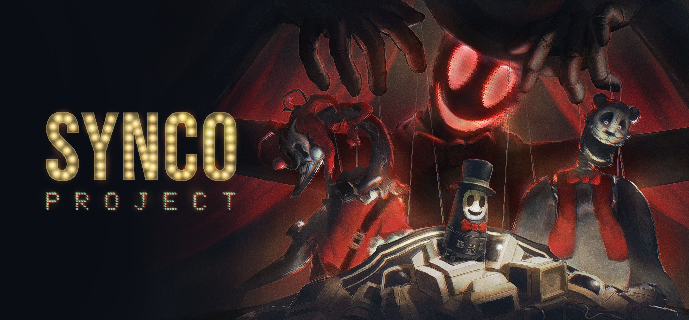

El Show Olvidado
01Unreal Engine 5.6 · C++ · Gameplay Ability System
Juego de terror en primera persona con animatrónicos. Construí el core de gameplay en C++ usando el Gameplay Ability System (GAS) de Unreal: un pawn datadriven que mapea abilities a Enhanced Input actions, con lifecycle de bindings encapsulado en la ability y limpieza automática al terminar. Incluyo cámara cinemática, interacción por line-trace y pickups con UMG.
Desafío técnico
Encapsular el input de cada habilidad dentro de la ability misma (no en el pawn), de modo que las acciones viajen con el DataAsset y se desvinculen automáticamente al terminar — evitando leaks de bindings en el input component.
// GA_BaseTriggeredInputAction.cpp — ActivateAbility()
// Lookup which UInputAction THIS ability class is mapped to,
// then bind it live within the ability lifecycle.
if (It.IsValid() && It.GameplayAbilityClass == GetClass())
{
const FEnhancedInputActionEventBinding& Triggered =
EnhancedInputComponent->BindAction(
It.InputAction, ETriggerEvent::Triggered,
this, &UGA_BaseTriggeredInputAction::OnTriggeredInputAction);
TriggeredHandles.AddUnique(Triggered.GetHandle());
const FEnhancedInputActionEventBinding& Released =
EnhancedInputComponent->BindAction(
It.InputAction, ETriggerEvent::Completed,
this, &UGA_BaseTriggeredInputAction::OnReleasedInputAction);
ReleasedHandles.AddUnique(Released.getHandle());
}
// On EndAbility: every tracked handle is removed — input scoped to ability lifecycle